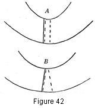
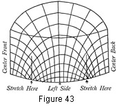

1930—Millinery Processes
by Carlotta M. Brown
FABRIC FRAMES
The fabric frame is in use throughout the year; for not only fall and winter hats but many spring and summer hats also make use of these frames as foundations. Commercial frames in many different shapes may be purchased at slight expense, but they usually require altering to adapt them to individual requirements. Directions for such alterations are given below. Frames may also be made from a variety of materials and by different processes. They may be molded over blocks of different types (see Blocks and Blocking), they may be constructed from copied or drafted patterns (see Patterns), or they may be modeled free hand (see Modeling).
MATERIALS USED FOR MAKING FABRIC FRAMES
Figure 9. Frame materials. A, willow; B, buckram; C, stiff net; D, flexible net; E, flexible crinoline; F, crinoline; G, chiffonette.
Willow is extremely light in weight and is the only wood-fiber fabric used in frame construction. It is made of finely cut strips of wood woven and pasted upon a background of crinoline. When modeling a brim free hand, willow may be cut on the bias, dampened, and pressed into the desired shape with the fingers. When dry, it will retain this shape.
Buckram is the stiffest of all frame fabrics and is heavily sized. It is used only when extreme stiffness of brim is wanted.
Stiff net is the most heavily sized of the frame nets, although less stiff than buckram. It is used for lightweight stiff brims.
Flexible net has a great deal of elasticity, which makes it most desirable for soft rolled brims and brim edges and for folds around crowns.
Flexible crinoline is one of the most desirable and convenient of frame fabrics for making soft hats. When used on the bias it needs no wiring to retain its shape. It is soft and pliable and much lighter in weight than flexible net. Flexible crinoline is used for all types of blocking and modeling, both of brims and of crowns.
Crinoline is best known for its many uses outside of millinery. However, it is much used in the construction of soft frames. It is extremely light in weight and of coarse texture. It is most desirable for free-hand modeling.
Chiffonette is very soft and light in weight and is used for edge bindings and for linings of soft crowns.
Tarlatan is extremely thin and coarse, with a great deal of sizing. It is used for lining semi-soft crowns; also brims where only slight stiffening is wanted.
ALTERATION OF FABRIC FRAMES
Altering the Head Size of the Brim
Increasing. Most frames come with detachable crowns, so that the first step is to remove the pins or cut the threads that hold the crown and the brim together. The back of each may be distinguished by the lapping of the wire, for all wire fastenings are started in the back.
After the crown has been removed, the brim shows an upright band about 1 inch in depth around the head size. The head size is enlarged by clipping around this band.
The clipping requires the greatest care, for a slash too deep may spoil the head size. It is better to clip a very little at a time, fitting to the head as one clips.
The head size seldom needs to be increased on the sides, for usually there is sufficient width, though greater length is often required. The size is increased by cutting about five tabs ¾ inch wide at the back of the head size, on the straight line from the top to the bottom of the headband and extending slightly into the brim. This usually will relieve the head-size strain; but if the wearer has heavy hair or very large head size, the process may have to be repeated at the front of the head-size band (Fig. 40). These small tabs are a most important part of the brim and must be formed with care. They are brought upright and trimmed to correspond in depth with the rest of the head-size band. These tabs should never be cut off, as they are used in fastening the crown to the brim.
Figure 40. Enlarging the head size of the brim by slashing at the back and front of the head size and pulling upright the tabs made by the slashing.
Decreasing. In decreasing the head size of a brim care must be taken not to alter the frame to any great extent. The method is different with brims of different types.
For the flat brim. Mark the center front of the crown and of the brim before detaching. Detach the brim from the crown and remove the crinoline binding and wire from the brim. Slash the brim through the center front and the center back; bring the two parts together to the required size with a flat lapping (Fig. 41). Sew either with hand-stitching or by the machine. If the former, use the stab stitch in even lengths. This method leaves the brim in its original shape; and since the frame must be padded before the final covering is put on, the parts lapped over are concealed (see Padding). Sew the wire to the brim again and cover the edge with a bias crinoline binding (Fig. 3).
Figure 41. Decreasing the head size of the brim by lashing the brim in half and lapping.
For the mushroom, or drooping, brim. Mark the center fronts, detach the brim, and remove the binding and wire as in the preceding method. Slash through the center back of the mushroom brim, and lap (Fig. 42). This gives a slight increase to the droop of the brim, which, if not desired, may be avoided by slashing both the front and the back and proceeding as with the flat brim. Resew the wire and the crinoline to the edge of the brim. In decreasing the head size of a rolled brim either of the methods given above may be used, the choice depending on the amount of roll to the brim. If there is an even roll all around the brim, slashing at the front and the back and lapping is best; if there is an uneven roll, the one slash at the back is used.
Figure 42. Slashing brim at back to decrease head size. A, greater decreasing; B, lesser decreasing.
Altering the Outside Line of the Brim
Increasing the width. Greater width may be given the brim by adding bias folds of soft frame material to the edge. This may be accomplished, also, by adding a fitted flange to the brim (Fig. 54).
Decreasing the width. Put the frame on the head and note carefully where the brim is too wide. Remove the binding and the wire from the outer edge and trim off the edge where it is too wide. As any great amount trimmed at one time may decrease the size too much, it is wiser to trim once, twice, or three times, if necessary, each time trying the frame on the head until the size desired is obtained. In fitting remember that the expanse of light surface always looks larger than when the frame is covered with dark material.
Altering the Head Size of the Crown
Increasing. Every one-piece plain crown has four bias points where the fullness was taken in as the crown was blocked.
Remove the binding and the wire at the base of the crown. Stretch slightly at the four bias points until the desired head size is reached (Fig. 43). Sew the wire back in place with a lock stitch.
Figure 43. Enlarging head size of crown by stretching at bias points.
Decreasing. Either one of two methods may be used. The first step in both methods is to rip the binding and the wire from the bottom of the crown.
1. If not more than 1 inch is to be taken out, it may be removed from one place without altering the balance of the crown. Make a vertical slash from 2 to 2½ inches in depth on the straight thread of the material at the center back. Lap flat and stitch. If a greater decrease is necessary, make a slash 2 inches deep at the center front, at the center back, and on each side on the straight thread of the material. Lap each slash slightly and sew. The result is a perfectly balanced crown (Fig. 44). Sew the wire and the crinoline in place at the bottom of the crown.
Figure 44. Decreasing the head size of the crown by slashing at straight points and lapping.
 2.
When a decided decrease is needed, slash the crown through the center from
front to back and lap
the two halves the required amount (Fig. 45). This will make the bottom line
slightly uneven at the point of joining. Trim this bottom line;
stitch in place; and pad the crown before adjusting the final covering (see
Padding the Frame). Sew the wire and the crinoline
in place at the bottom of the crown.
2.
When a decided decrease is needed, slash the crown through the center from
front to back and lap
the two halves the required amount (Fig. 45). This will make the bottom line
slightly uneven at the point of joining. Trim this bottom line;
stitch in place; and pad the crown before adjusting the final covering (see
Padding the Frame). Sew the wire and the crinoline
in place at the bottom of the crown.
Figure 45. Decreasing the crown size by slashing through the center from front to back and lapping.
Altering the Head Size of a Frame with Crown and Brim in One
Increasing. Small hats with the crown and brim blocked in one piece are altered in the same way as those with the plain crown. Rip the binding and the wire from the brim-edge for 3 inches on each side of the center back and stretch the head size at the two bias points, taking care to stretch the brim as little as possible (Fig. 43). Resew the wire to the brim edge.
Decreasing. Remove the binding and the wire from the outer edge. Slash through the center back of the brim and into the crown about 2½ inches. Graduate the lapping from the outer edge of the brim to the point at which it disappears into the crown (Fig. 44). Trim the irregular edge-line made by lapping; return the wire and the binding to the brim.
If a further decrease is required, slash through the brim and 2 inches into the crown at the center back and at each side on the straight thread of the material, lapping in the same manner as before. Trim the brim edge even and sew the wire and the crinoline into place (Fig. 3).
PADDING THE FRAME
When using fabric of light-weight quality for the outer covering of a hat, it is often necessary to pad the frame before attaching this covering. The rough surface of the frame not only takes away from the beauty of the fabric but may cause it to cut or wear in handling. A number of inexpensive cotton materials may be used, the choice depending on the amount of padding necessary. Those most often used are light-weight outing flannel, cotton flannel, and unbleached muslin. This padding is especially necessary when pasting is to be done.
Process for the Brim
Follow the process used in the smooth-fitted brim covering (Fig. 14) except that the facing is not turned in for seaming but is trimmed flush with the edge of the brim, eliminating all possible bulk.
Process for the Crown
Follow the directions given for the tailored crown (Figs. 22-23).